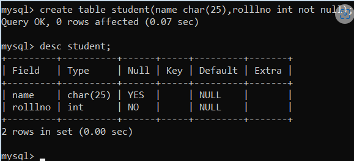
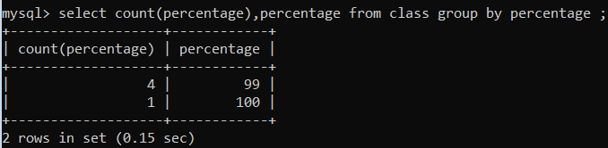
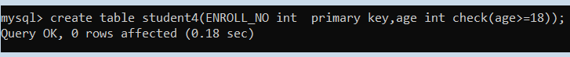
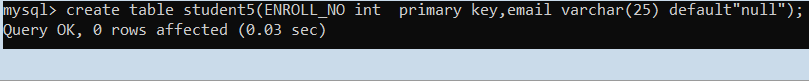

SQL Constraints
Constraints are the rules that we can apply on the type of data in a table. That is, we can specify the limit on the type of data that can be stored in a particular column in a table using constraints.
SYNTAX:
CREATE TABLE sample_table
(
column1 data_type(size) constraint_name,
column2 data_type(size) constraint_name,
column3 data_type(size) constraint_name,
....
);
sample_table: Name of the table to be created.
data_type: Type of data that can be stored in the field.
constraint_name: Name of the constraint. for example- NOT NULL, UNIQUE, PRIMARY KEY etc.
The available constraints in SQL are:
NULL:
This constraint tells that we cannot store a null value in a column. That is, if a column is specified as NOT NULL then we will not be able to store null in this particular column any more.
SYNTAX:
CREATE TABLE Student
(
ID int(6) NOT NULL,
NAME varchar(10) NOT NULL,
ADDRESS varchar(20)
);
UNIQUE:
This constraint when specified with a column, tells that all the values in the column must be unique. That is, the values in any row of a column must not be repeated.
SYNTAX:
CREATE TABLE Student
(
ID int(6) NOT NULL UNIQUE,
NAME varchar(10),
ADDRESS varchar(20)
);

PRIMARY KEY:
A primary key is a field which can uniquely identify each row in a table. And this constraint is used to specify a field in a table as primary key.
SYNTAX:
CREATE TABLE Student
(
ID int(6) NOT NULL UNIQUE,
NAME varchar(10),
ADDRESS varchar(20)
);

FOREIGN KEY:
A Foreign key is a field which can uniquely identify each row in a another table. And this constraint is used to specify a field as Foreign key.
Orders
O_ID ORDER_NO C_ID
1 2253 3
2 3325 3
3 4521 2
4 8532 1
Customers
C_ID NAME ADDRESS
1 RAMESH DELHI
2 SURESH NOIDA
3 DHARMESH GURGAON
As we can see clearly that the field C_ID in Orders table is the primary key in Customers table, i.e. it uniquely identifies each row in the Customers table. Therefore, it is a Foreign Key in Orders table.
SYNTAX:
CREATE TABLE Orders
(
O_ID int NOT NULL,
ORDER_NO int NOT NULL,
C_ID int,
PRIMARY KEY (O_ID),
FOREIGN KEY (C_ID) REFERENCES Customers(C_ID)
)
CHECK:
This constraint helps to validate the values of a column to meet a particular condition. That is, it helps to ensure that the value stored in a column meets a specific condition.

DEFAULT:
This constraint specifies a default value for the column when no value is specified by the user.
SYNTAX:
CREATE TABLE Student
(
ID int(6) NOT NULL,
NAME varchar(10) NOT NULL,
AGE int DEFAULT 18
);
